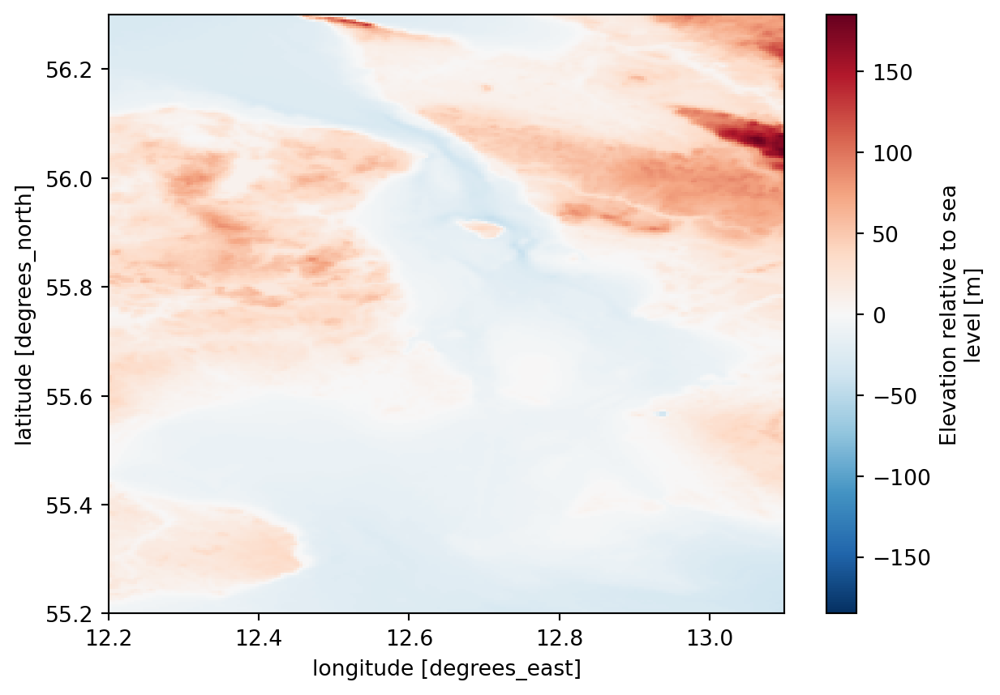

import xarray
import mikeioDfs2 - Bathymetric data
Convert GEBCO 2020 NetCDF to dfs2
GEBCO Compilation Group (2020) GEBCO 2020 Grid (doi:10.5285/a29c5465-b138-234d-e053-6c86abc040b9)
ds = xarray.open_dataset("../../data/gebco_2020_n56.3_s55.2_w12.2_e13.1.nc")
ds<xarray.Dataset> Size: 118kB
Dimensions: (lat: 264, lon: 216)
Coordinates: (2)
Data variables:
elevation (lat, lon) int16 114kB ...
Attributes: (8)ds.elevation.plot();
ds.elevation.sel(lon=12.74792, lat=55.865, method="nearest")<xarray.DataArray 'elevation' ()> Size: 2B [1 values with dtype=int16] Coordinates: (2) Attributes: (7)
Check ordering of dimensions, should be (y,x)
ds.elevation.dims('lat', 'lon')el = ds.elevation.values
el.shape(264, 216)Check that axes are increasing, S->N W->E
ds.lat.values[0],ds.lat.values[-1] (np.float64(55.20208333333332), np.float64(56.29791666666665))ds.lat.values[0] < ds.lat.values[-1] np.True_ds.lon.values[0],ds.lon.values[-1] (np.float64(12.20208333333332), np.float64(13.097916666666663))el[0,0] # Bottom leftnp.int16(-8)el[-1,0] # Top Leftnp.int16(-31)geometry = mikeio.Grid2D(x=ds.lon.values, y=ds.lat.values, projection="LONG/LAT")
geometry<mikeio.Grid2D>
x: [12.2, 12.21, ..., 13.1] (nx=216, dx=0.004167)
y: [55.2, 55.21, ..., 56.3] (ny=264, dy=0.004167)
projection: LONG/LATda = mikeio.DataArray(data=el,
item=mikeio.ItemInfo("Elevation", mikeio.EUMType.Total_Water_Depth),
geometry=geometry,
dims=("y","x") # No time dimension
)
da<mikeio.DataArray>
name: Elevation
dims: (y:264, x:216)
time: 2018-01-01 00:00:00 (time-invariant)
geometry: Grid2D (ny=264, nx=216)da.plot();
da.plot(cmap='coolwarm', vmin=-100, vmax=100);
da.to_dfs("gebco.dfs2")ds = mikeio.read("gebco.dfs2")
ds.Elevation.plot()Clean up
import os
os.remove("gebco.dfs2")